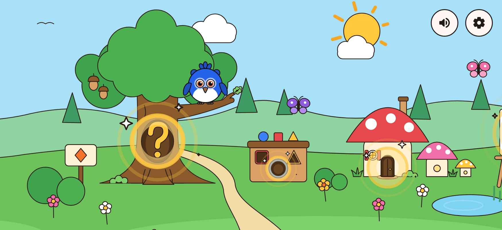
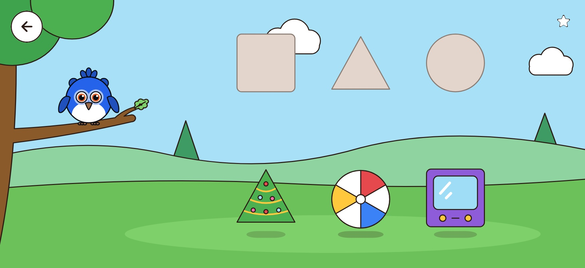
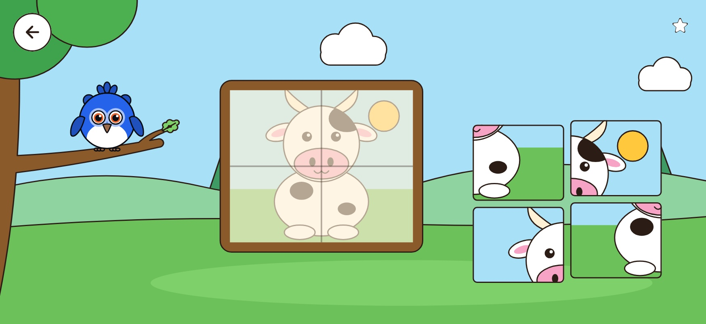
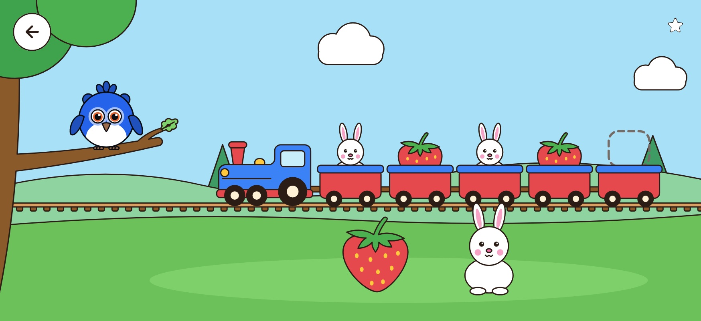
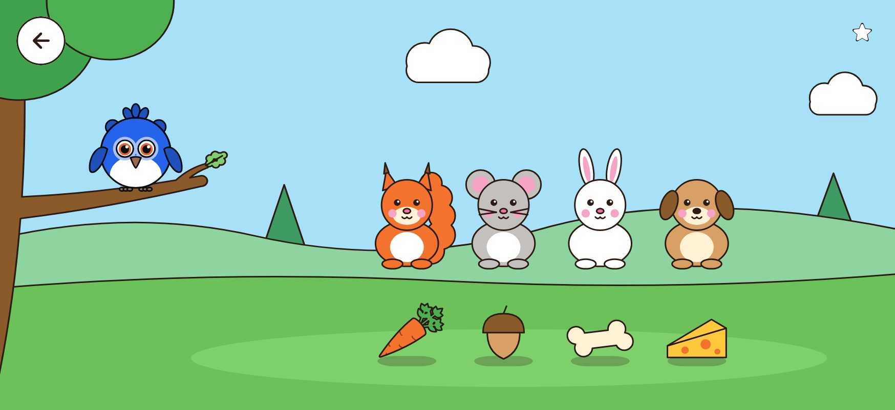
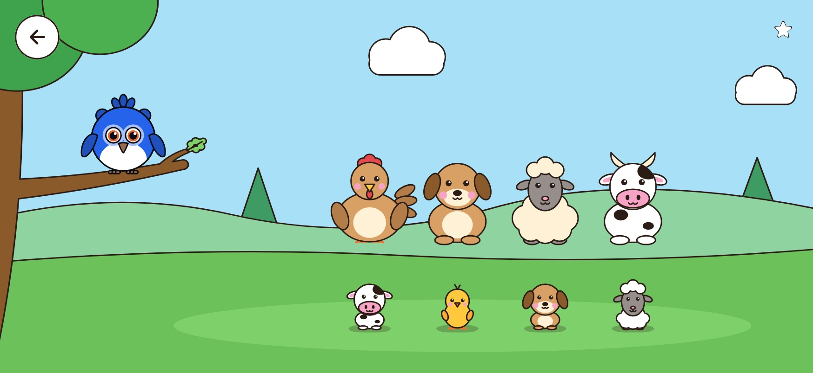
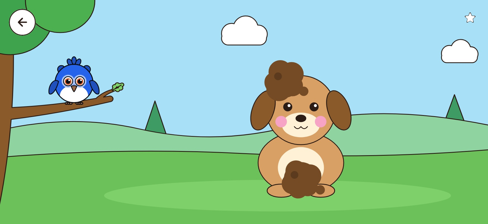

Спокійні ігри для малюків на лісовій галявині
Calm games for toddlers on a forest meadow
Спокойные игры для малышей на лесной поляне
Ruhige Spiele für Kleinkinder auf einer Waldwiese
Juegos tranquilos para peques en una pradera del bosque
Spokojne gry dla maluchów na leśnej łące
П'ятнадцять ігор для дітей 1–4 років разом із пташкою Піпіт: форми, розміри, лічба, кольори, пазли й тварини. Без реклами, без таймерів і без програшів.
Fifteen games for children aged 1–4 with Pipit the bird: shapes, sizes, counting, colours, puzzles and animals. No ads, no timers and no losing.
Пятнадцать игр для детей 1–4 лет вместе с птичкой Пипит: формы, размеры, счёт, цвета, пазлы и животные. Без рекламы, без таймеров и без проигрышей.
Fünfzehn Spiele für Kinder von 1–4 Jahren mit Vogel Pipit: Formen, Größen, Zählen, Farben, Puzzles und Tiere. Ohne Werbung, ohne Zeitdruck und ohne Verlieren.
Quince juegos para niños de 1 a 4 años con el pajarito Pipit: formas, tamaños, contar, colores, rompecabezas y animales. Sin anuncios, sin cronómetros y sin perder.
Piętnaście gier dla dzieci w wieku 1–4 lat z ptaszkiem Pipitem: kształty, rozmiary, liczenie, kolory, puzzle i zwierzęta. Bez reklam, bez liczników czasu i bez przegrywania.
Дві ігри безкоштовні назавжди. Решту — і всі нові ігри — відкриває одна покупка, без підписки.
Two games are free for good. One purchase opens the rest — and every new game — with no subscription.
Две игры бесплатны навсегда. Остальные — и все новые игры — открывает одна покупка, без подписки.
Zwei Spiele sind für immer kostenlos. Ein Kauf öffnet den Rest – und jedes neue Spiel – ohne Abo.
Dos juegos son gratis para siempre. Una sola compra abre el resto, y cada juego nuevo, sin suscripción.
Dwie gry są darmowe na zawsze. Jeden zakup otwiera resztę – i każdą nową grę – bez subskrypcji.

Створено для маленьких рук
Made for little hands
Создано для маленьких рук
Für kleine Hände gemacht
Hecho para manos pequeñas
Stworzone dla małych rączek
Кожен будиночок на галявині — двері до гри, а дупло старого дуба відкриває випадкову. Читати нічого не треба: великі деталі, прості дотики й перетягування.
Every little house on the meadow is a door to a game, and the old oak's hollow opens one by chance. Nothing to read: big pieces, simple taps and drags.
Каждый домик на поляне — дверь в игру, а дупло старого дуба открывает случайную. Читать ничего не нужно: большие детали, простые касания и перетаскивания.
Jedes Häuschen auf der Wiese ist eine Tür zu einem Spiel, und das Astloch der alten Eiche öffnet ein zufälliges. Nichts zu lesen: große Teile, einfaches Tippen und Ziehen.
Cada casita de la pradera es la puerta a un juego, y el hueco del viejo roble abre uno al azar. No hay nada que leer: piezas grandes, toques y arrastres sencillos.
Każdy domek na łące to drzwi do gry, a dziupla starego dębu otwiera losową. Nie trzeba nic czytać: duże elementy, proste dotknięcia i przeciąganie.
Без реклами
No ads
Без рекламы
Ohne Werbung
Sin anuncios
Bez reklam
Ні банерів, ні відео, ні випадкових переходів.
No banners, no videos, no stray taps away.
Ни баннеров, ни видео, ни случайных переходов.
Keine Banner, keine Videos, kein versehentliches Wegtippen.
Ni banners, ni vídeos, ni toques que lleven a otra parte.
Żadnych banerów, filmów ani przypadkowych przejść.
Без поспіху
No rush
Без спешки
Ohne Eile
Sin prisas
Bez pośpiechu
Немає таймерів і програшів — гра чекає на дитину.
No timers and no losing — every game waits for the child.
Нет таймеров и проигрышей — игра ждёт ребёнка.
Keine Uhr und kein Verlieren – jedes Spiel wartet auf das Kind.
Sin cronómetros y sin perder: cada juego espera al niño.
Bez liczników czasu i przegrywania – gra czeka na dziecko.
Підказки
Gentle hints
Подсказки
Sanfte Hinweise
Pistas suaves
Podpowiedzi
Якщо малюк завагався, рука-підказка покаже, що робити.
If the child hesitates, a see-through hand shows the move.
Если малыш засомневался, рука-подсказка покажет, что делать.
Zögert das Kind, zeigt eine durchsichtige Hand, was zu tun ist.
Si el peque duda, una mano transparente le muestra qué hacer.
Gdy maluch się zawaha, przezroczysta rączka pokaże, co zrobić.
Нічого не збираємо
No data collected
Ничего не собираем
Keine Datenerfassung
No recogemos datos
Nic nie zbieramy
Без акаунтів, аналітики й стеження. Працює без інтернету.
No accounts, analytics or tracking. Works offline.
Без аккаунтов, аналитики и слежки. Работает без интернета.
Keine Konten, keine Analyse, kein Tracking. Funktioniert offline.
Sin cuentas, analíticas ni rastreo. Funciona sin internet.
Bez kont, analityki i śledzenia. Działa bez internetu.






15 ігор на одній галявині
15 games on one meadow
15 игр на одной поляне
15 Spiele auf einer Wiese
15 juegos en una pradera
15 gier na jednej łące
У кожній грі кілька галявинок — від найпростішої до трохи складнішої, а ігри пам'ятають, що вже показували, тож наступного разу малюка чекають інші малюнки, тварини й речі. Ми постійно додаємо нові ігри, і з кожним оновленням на галявині з'являються нові будиночки.
Each game has several clearings, from the simplest to a little harder, and the games remember what they showed, so next time brings other pictures, animals and things. We keep adding new games, and every update brings new little houses to the meadow.
В каждой игре несколько полянок — от самой простой до чуть более сложной, а игры помнят, что уже показывали, поэтому в следующий раз малыша ждут другие картинки, животные и вещи. Мы постоянно добавляем новые игры, и с каждым обновлением на поляне появляются новые домики.
Jedes Spiel hat mehrere Lichtungen, von der einfachsten bis zu einer etwas schwierigeren, und die Spiele merken sich, was sie gezeigt haben – beim nächsten Mal warten andere Bilder, Tiere und Dinge. Wir fügen ständig neue Spiele hinzu, und mit jedem Update kommen neue Häuschen auf die Wiese.
Cada juego tiene varios claros, del más sencillo a uno un poco más difícil, y los juegos recuerdan lo que ya mostraron, así que la próxima vez esperan otros dibujos, animales y cosas. Añadimos juegos nuevos constantemente, y cada actualización trae casitas nuevas a la pradera.
Każda gra ma kilka polanek, od najprostszej do nieco trudniejszej, a gry pamiętają, co już pokazały, więc następnym razem czekają inne obrazki, zwierzęta i rzeczy. Stale dodajemy nowe gry, a z każdą aktualizacją na łące pojawiają się nowe domki.
- Форми
- Розміри
- Лічба
- Кольори
- Розмальовка
- Урожай
- Збери ціле
- Хованки
- Нагодуй звірят
- Знайди пару
- Що буде далі
- Мама і малюк
- Помий звірят
- Проведи доріжкою
- Пазл
- Прикрась ялинку
- + нові ігри незабаром
- Shapes
- Sizes
- Counting
- Colours
- Colouring
- Harvest
- Building
- Hide and seek
- Feeding
- Find a pair
- What comes next
- Mother and baby
- Wash the animals
- Lead the way home
- Puzzle
- Decorate the tree
- + new games coming
- Формы
- Размеры
- Счёт
- Цвета
- Раскраска
- Урожай
- Собери целое
- Прятки
- Покорми зверят
- Найди пару
- Что будет дальше
- Мама и малыш
- Помой зверят
- Проведи по дорожке
- Пазл
- Наряди ёлку
- + новые игры скоро
- Formen
- Größen
- Zählen
- Farben
- Ausmalen
- Ernte
- Bauen
- Verstecken
- Füttern
- Paare finden
- Was kommt danach
- Mama und Kind
- Tiere waschen
- Zeig den Weg nach Hause
- Puzzle
- Schmück den Baum
- + bald neue Spiele
- Formas
- Tamaños
- Contar
- Colores
- Colorear
- Cosecha
- Construir
- Escondite
- Dar de comer
- Busca la pareja
- ¿Qué sigue?
- Mamá y bebé
- Baña a los animales
- Camino a casa
- Rompecabezas
- Decora el árbol
- + pronto, juegos nuevos
- Kształty
- Rozmiary
- Liczenie
- Kolory
- Kolorowanka
- Zbiory
- Budowanie
- W chowanego
- Nakarm zwierzątka
- Znajdź parę
- Co będzie dalej
- Mama i maluch
- Umyj zwierzątka
- Prowadź do domu
- Puzzle
- Ubierz choinkę
- + wkrótce nowe gry
Грайте разом
Play together
Играйте вместе
Gemeinsam spielen
Jugad juntos
Grajcie razem
У Rombik немає озвучених слів — голос гри це ви. Малюки найкраще вчаться, коли дорослий поруч називає вголос те, що вони бачать.
Rombik has no spoken words — you are the voice of the game. Little ones learn best when a grown-up beside them names what they see.
В Rombik нет озвученных слов — голос игры это вы. Малыши лучше всего учатся, когда взрослый рядом называет вслух то, что они видят.
Rombik spricht keine Wörter – die Stimme des Spiels sind Sie. Kleine Kinder lernen am besten, wenn ein Erwachsener neben ihnen benennt, was sie sehen.
Rombik no tiene palabras habladas: la voz del juego es usted. Los peques aprenden mejor cuando un adulto a su lado nombra lo que ven.
W Rombiku nie ma nagranych słów – głosem gry jesteś Ty. Maluchy uczą się najlepiej, gdy dorosły obok nazywa na głos to, co widzą.
Називайте вголос
Say it aloud
Называйте вслух
Laut benennen
Dígalo en voz alta
Nazywaj na głos
«Червоне коло», «великий ведмедик» — кажіть, що робить малюк, а Піпіт підбадьорить вас обох.
“A red circle”, “the big bear”: name what your child does, and Pipit cheers you both on.
«Красный круг», «большой мишка» — говорите, что делает малыш, а Пипит подбодрит вас обоих.
„Ein roter Kreis“, „der große Bär“: Sagen Sie, was Ihr Kind tut, und Pipit feuert Sie beide an.
«Un círculo rojo», «el oso grande»: diga lo que hace su peque, y Pipit los anima a los dos.
„Czerwone kółko”, „duży miś” – mów, co robi maluch, a Pipit kibicuje wam obojgu.
Коротко й весело
Short and sweet
Коротко и весело
Kurz und fröhlich
Corto y divertido
Krótko i wesoło
Кілька коротких ігор кращі за одну довгу: закінчуйте, поки малюк не втомився.
A few short games are better than one long one: stop before your child gets tired.
Несколько коротких игр лучше одной длинной: заканчивайте, пока малыш не устал.
Ein paar kurze Spiele sind besser als ein langes: Hören Sie auf, bevor Ihr Kind müde wird.
Unos juegos cortos son mejores que uno largo: pare antes de que su peque se canse.
Kilka krótkich gier jest lepszych niż jedna długa: kończ, zanim maluch się zmęczy.
Закріпіть екран
Pin the screen
Закрепите экран
Bildschirm fixieren
Fije la pantalla
Przypnij ekran
Щоб маленька рука випадково не вийшла з гри: як це зробити, показано на сторінці для батьків.
So a little hand can't leave the game by chance: the parents' page shows how.
Чтобы маленькая ручка случайно не вышла из игры: как это сделать, показано на странице для родителей.
Damit eine kleine Hand das Spiel nicht aus Versehen verlässt: Wie das geht, zeigt die Elternseite.
Para que una manita no salga del juego sin querer: la página para padres muestra cómo.
Żeby mała rączka przypadkiem nie wyszła z gry: jak to zrobić, pokazuje strona dla rodziców.
Як радять педіатри
As pediatricians advise
Как советуют педиатры
Wie Kinderärzte raten
Como aconsejan los pediatras
Jak radzą pediatrzy
З півтора року — лише разом із дорослим, з двох до п'яти — не більше години на день.
From 18 months only together with a grown-up, and no more than an hour a day from two to five.
С полутора лет — только вместе со взрослым, с двух до пяти — не больше часа в день.
Ab 18 Monaten nur zusammen mit einem Erwachsenen, von zwei bis fünf Jahren höchstens eine Stunde am Tag.
Desde los 18 meses, solo junto a un adulto; de los dos a los cinco años, no más de una hora al día.
Od 18. miesiąca tylko razem z dorosłym, od dwóch do pięciu lat nie dłużej niż godzinę dziennie.
Для батьків
For parents
Для родителей
Für Eltern
Para padres
Dla rodziców
- Дві ігри — «Форми» й «Розміри» — безкоштовні назавжди.
- Інші тринадцять відкриває одна покупка. Нові ігри ми додаємо постійно — і вони відкриються разом із нею, без доплат.
- Покупки й налаштування сховані за прикладом для дорослих, тож малюк не натрапить на них випадково. Замкнений будиночок теж веде до покупки лише через цей приклад.
- З 1 грудня до 14 січня галявина стає зимовою, а біля дуба виростає ялинка, яку можна прикрасити, — ця святкова гра безкоштовна для всіх.
- Мова — українська, англійська, німецька, іспанська, польська чи російська, музику можна вимкнути на сторінці для батьків. Там же підказка, як закріпити екран, щоб малюк випадково не вийшов із гри, і кнопки, щоб оцінити застосунок, поділитися ним і написати нам.
- Без реклами, акаунтів, аналітики й будь-якого збору даних. Деталі — у політиці конфіденційності.
- Two games — Shapes and Sizes — are free for good.
- One purchase opens the other thirteen. We keep adding new games, and they open with it too, at no extra cost.
- Purchases and settings sit behind a sum for grown-ups, so little ones can't reach them by accident. A locked house leads to the purchase only through that sum too.
- From 1 December to 14 January the meadow turns wintry and a fir grows by the oak, ready to be decorated: this holiday game is free for everyone.
- English, Ukrainian, German, Spanish, Polish or Russian; background music can be switched off on the parents' page. It also shows how to pin the screen so a little one can't leave the game by accident, with buttons to rate the app, share it and write to us.
- No ads, accounts, analytics or data collection of any kind. Details in the privacy policy.
- Две игры — «Формы» и «Размеры» — бесплатны навсегда.
- Остальные тринадцать открывает одна покупка. Новые игры мы добавляем постоянно — и они откроются вместе с ней, без доплат.
- Покупки и настройки спрятаны за примером для взрослых, поэтому малыш не наткнётся на них случайно. Закрытый домик тоже ведёт к покупке только через этот пример.
- С 1 декабря по 14 января поляна становится зимней, а у дуба вырастает ёлка, которую можно нарядить, — эта праздничная игра бесплатна для всех.
- Язык — русский, английский, украинский, немецкий, испанский или польский, музыку можно выключить на странице для родителей. Там же подсказка, как закрепить экран, чтобы малыш случайно не вышел из игры, и кнопки, чтобы оценить приложение, поделиться им и написать нам.
- Без рекламы, аккаунтов, аналитики и какого-либо сбора данных. Подробности — в политике конфиденциальности.
- Zwei Spiele – Formen und Größen – sind für immer kostenlos.
- Ein Kauf öffnet die anderen dreizehn. Wir fügen ständig neue Spiele hinzu, und sie öffnen sich ohne Aufpreis mit.
- Käufe und Einstellungen liegen hinter einer Rechenaufgabe für Erwachsene, damit Kleine sie nicht aus Versehen erreichen. Auch ein verschlossenes Häuschen führt nur über diese Aufgabe zum Kauf.
- Vom 1. Dezember bis 14. Januar wird die Wiese winterlich, und neben der Eiche wächst ein Tannenbaum zum Schmücken: Dieses Feiertagsspiel ist für alle kostenlos.
- Deutsch, Englisch, Ukrainisch, Spanisch, Polnisch oder Russisch; die Musik lässt sich auf der Elternseite ausschalten. Dort steht auch, wie man den Bildschirm fixiert, damit die Kleinen das Spiel nicht aus Versehen verlassen, mit Knöpfen, um die App zu bewerten, zu teilen und uns zu schreiben.
- Keine Werbung, keine Konten, keine Analyse und keinerlei Datenerfassung. Einzelheiten in der Datenschutzerklärung.
- Dos juegos, Formas y Tamaños, son gratis para siempre.
- Una sola compra abre los otros trece. Añadimos juegos nuevos constantemente, y se abren con ella sin coste extra.
- Las compras y los ajustes están detrás de una suma para adultos, así que los peques no llegan a ellos por accidente. Una casita cerrada también lleva a la compra solo a través de esa suma.
- Del 1 de diciembre al 14 de enero la pradera se vuelve invernal y junto al roble crece un abeto para decorar: este juego navideño es gratis para todos.
- Español, inglés, ucraniano, alemán, polaco o ruso; la música se puede apagar en la página para padres. Allí también se explica cómo fijar la pantalla para que el peque no salga del juego sin querer, con botones para valorar la app, compartirla y escribirnos.
- Sin anuncios, cuentas, analíticas ni recogida de datos de ningún tipo. Más detalles en la política de privacidad.
- Dwie gry – Kształty i Rozmiary – są darmowe na zawsze.
- Jeden zakup otwiera pozostałe trzynaście. Stale dodajemy nowe gry, a one otworzą się razem z nim, bez dopłat.
- Zakupy i ustawienia są ukryte za działaniem dla dorosłych, więc maluch nie trafi na nie przypadkiem. Zamknięty domek też prowadzi do zakupu tylko przez to działanie.
- Od 1 grudnia do 14 stycznia łąka staje się zimowa, a przy dębie wyrasta choinka do ubrania – ta świąteczna gra jest darmowa dla wszystkich.
- Polski, angielski, ukraiński, niemiecki, hiszpański lub rosyjski; muzykę można wyłączyć na stronie dla rodziców. Jest tam też podpowiedź, jak przypiąć ekran, żeby maluch przypadkiem nie wyszedł z gry, oraz przyciski, by ocenić aplikację, udostępnić ją i napisać do nas.
- Bez reklam, kont, analityki i jakiegokolwiek zbierania danych. Szczegóły w polityce prywatności.